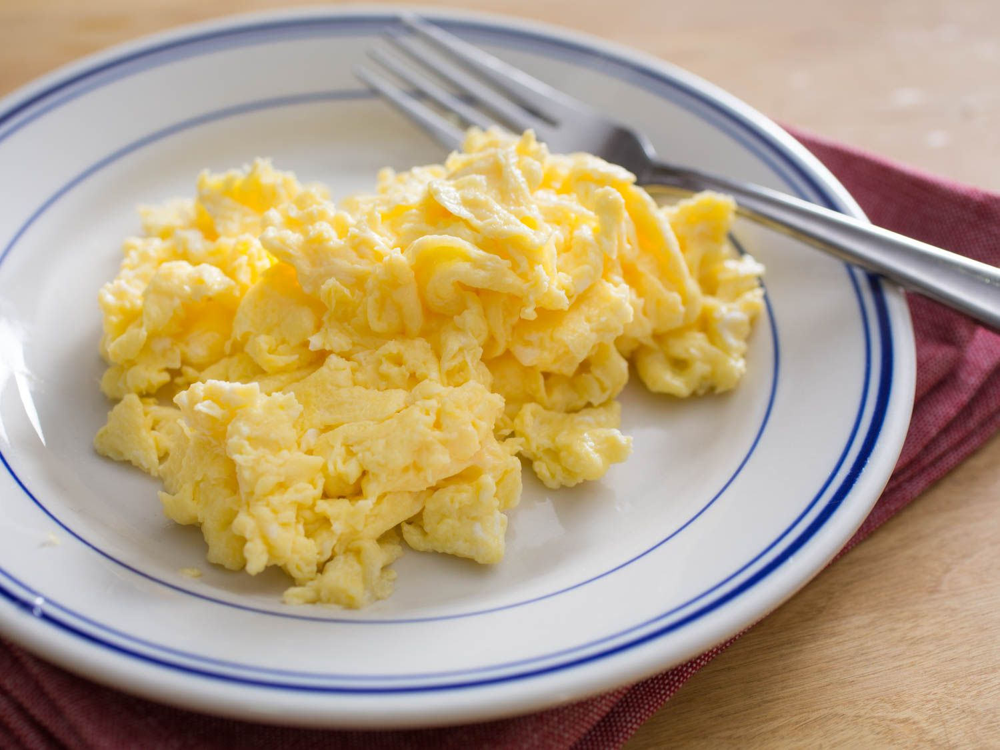

Home
Scrambled Eggs

Description
Scrambled eggs are a classic, soft, and comforting dish made from whole eggs that are beaten and gently cooked.
Their final texture is creamy, light, and fluffy, featuring a uniform yellow color and a delicate flavor that
suits any palate.
This is an incredibly versatile preparation that works beautifully on its own or as an ideal side. It is a
fundamental staple of breakfasts and brunches worldwide, pairing perfectly over toast, alongside avocado, or
with crispy bacon.
Ingredients
- 2 or 3 eggs
- 1 teaspoon of butter or olive oil
- Salt and pepper to taste
- Optional: a splash of milk for extra fluffiness
Steps
- Crack the eggs into a bowl.
- Add salt and pepper and beat well with a fork.
- Place the pan over medium-low heat with the butter or oil.
- Pour the beaten eggs into the center.
- Constantly move the mixture with a spatula, pushing from the edges toward the center.
- Turn off the heat while they still look slightly moist.
- Serve immediately before they dry out.